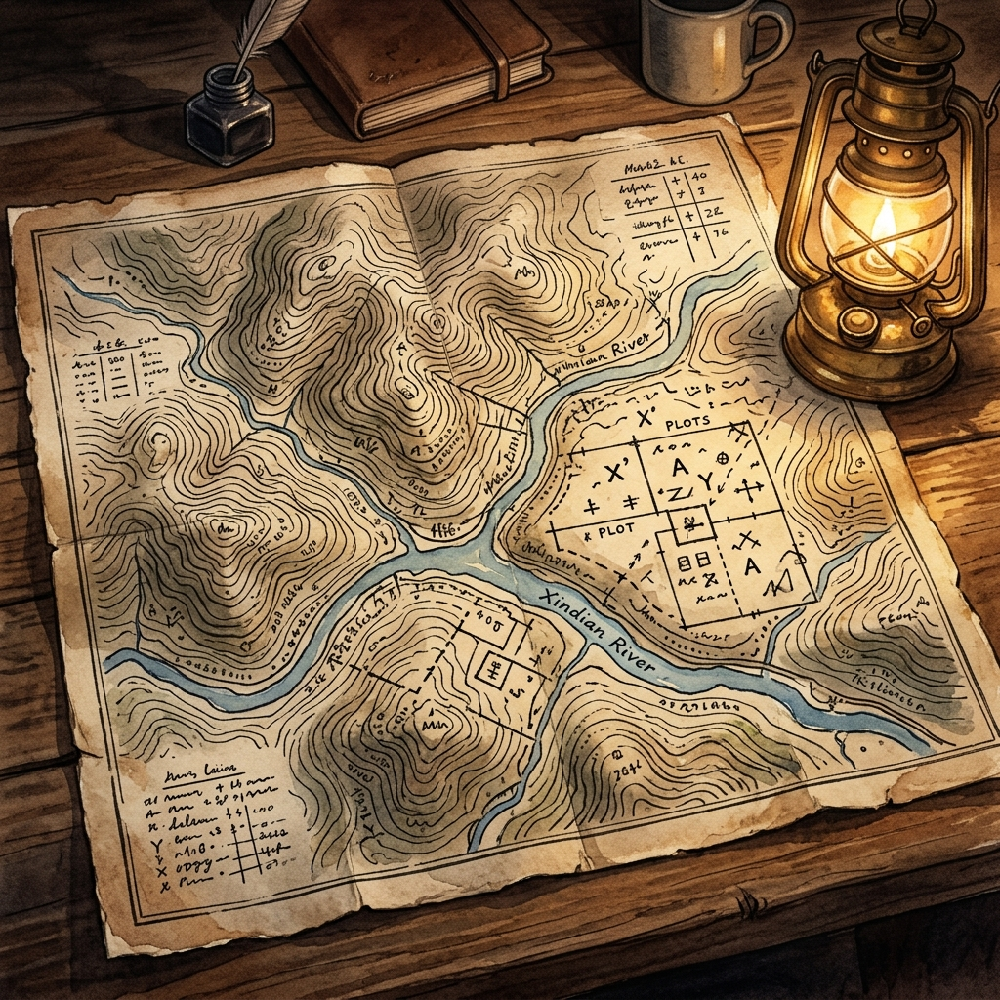

明治煤礦的歷史軌跡：從官方檔案看礦權整合

明治煤礦對許多今日的新店人而言，只是一個遙遠的歷史名詞。然而，透過泛黃的日治時期礦業申請檔案，那一張張寫著「出願」、「相續」、「侵掘」的官方文書，讓這座消失在後山坡的礦坑，逐漸在紙上浮現出清晰的歷史軌跡。
戰後初期的民國 35 年（1946），該礦正式以「明治炭礦會社」名義，向臺灣省行政長官公署工礦處辦理登記換照，取得權利核發。在此居住了半個多世紀的翁東源先生證實，他的父親確於民國 25 年來到新店做礦工，隨後進入明治煤礦工作，直到民國 39 年明治煤礦關門後，才轉往安坑錦繡一帶的礦坑維持生計。
要理解明治煤礦的龐大版圖，必須將視角拉回日治時期，拆解其由三大核心「礦第」合縱連橫的合併史：
一、 礦第 459 號：後山的赤沙土契約
礦第 459 號位於「新店街後山之內民有地」，地質多屬紅褐色的「赤沙土」。這塊礦區的開拓史可追溯至日治極早期：
- 明治 35 年（1901）：由開拓先驅許又銘提出「出願」（申請採礦許可）。
- 明治 37 年（1903）：因事務繁忙，設立代理人陳清秀負責現場管理。
- 明治 39 年（1905）：礦權正式讓渡予代理人陳清秀。
- 大正 元年（1912）：陳清秀過世，由其子陳木火依法辦理「相續」（繼承）登記。
- 昭和 7 年（1932）：為了擴大開採效益，陳木火決定將此礦與鄰近駱世安等人的「礦第 670 號」正式合併。
二、 礦第 670 號：士紳與產權的轉移
礦第 670 號與 459 號緊鄰，其流轉過程見證了地方實業家的興衰：
- 明治 41 年（1908）：日籍實業家吉川榮吉取得「石炭採掘願許可」。
- 明治 43 年（1910）：吉川榮吉將礦權讓渡予新店街的陳木火。
- 昭和 2 年（1927）：陳木火將礦權轉讓給地方名紳駱世安與劉永添。
- 昭和 7 年（1932）：駱世安、劉永添與黃程輝達成共識，將礦第 459 號與 670 號兩大礦區進行正式合併，奠定了後續明治煤礦的骨幹。
三、 礦第 2901 號：大坪林地的重疊糾紛與「實地臨檢」
礦第 2901 號位於「臺北州文山郡新店庄大坪林地內」，是明治煤礦向北延伸的重要礦區。然而，這塊礦區在開採之初卻充滿了波折：
昭和 8 年（1933），蘇鐩琦向當局提出採掘申請。到了昭和 11 年（1936），蘇氏赫然發現，該礦區與鄰近已取得許可的「礦第 140 號」以及駱世安等人的「礦第 670 號」在地理邊界上出現了重疊。
關於「侵掘」與「實地臨檢」：
地底的煤層是不看人間地界線的。由於邊界線模糊，蘇氏擔心工人在地底下開挖時，會產生「侵掘」（即越界侵佔開採他人礦產）的嚴重法律糾紛。為此，他特別向總督府工務局呈遞申請書，請求修正邊界，並強烈要求當局「儘速派員前來實地臨檢」（現場勘測釐清）。
經過總督府官員親自拉著鋼捲尺、攜帶經緯儀來到新店山林進行嚴格的現場勘測後，重疊的糾紛才得以釐清，界線也重新劃定。
糾紛平息後，昭和 19 年（1944），「明治炭礦株式會社」正式設定並取得了礦第 2901 號的使用權。至此，從地圖的點到線，明治煤礦終於完成了它在新店後山的完整版圖拼圖。
四、 戰後澄清：與振山煤礦的界線
在民國 35 年（1946）台北縣政府的「礦業權登記換照案」檔案中，曾有公文書特別針對明治煤礦與另一家大型礦場「振山煤礦」進行過界線澄清。檔案詳細說明了兩家礦區的走向、四至界線與坑道深度，證實兩者在地質與產權上並無直接重疊或聯屬關係，是一份極具澄清價值的法律文書。
煤炭是地底沉睡萬年的樹木精華，而礦業檔案則是歷史沉澱在紙上的微光。明治煤礦的礦第流變，不僅說的是地下的黑色財富，更寫活了地方前人在這片山林間，為了土地界線與生存利益，所展開的嚴謹契約與角力故事。